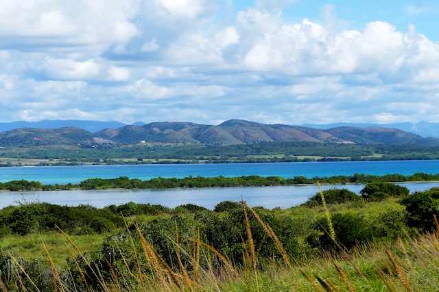
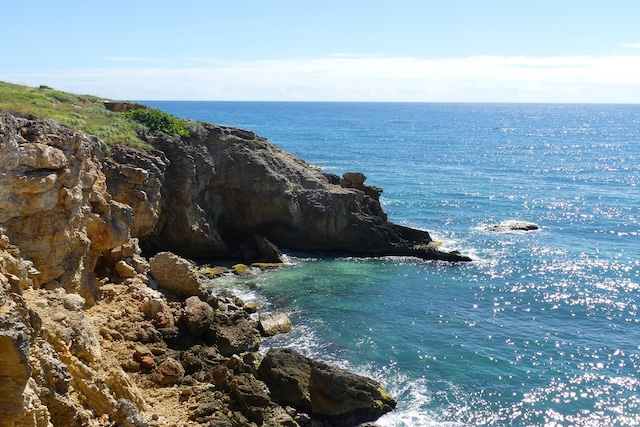
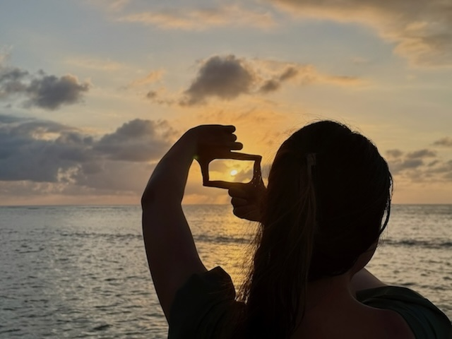
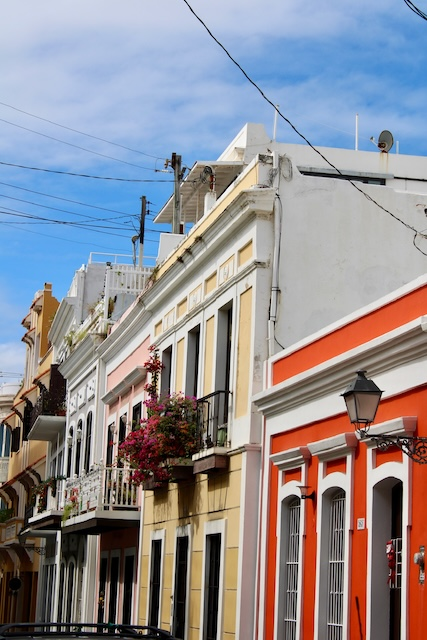
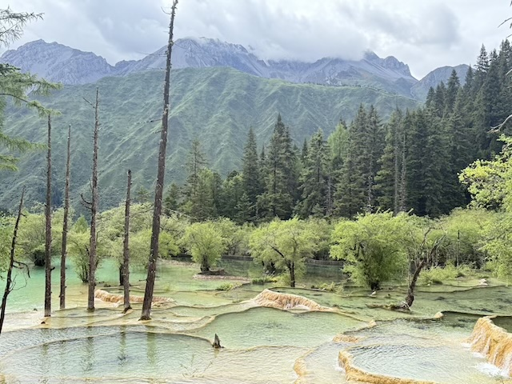
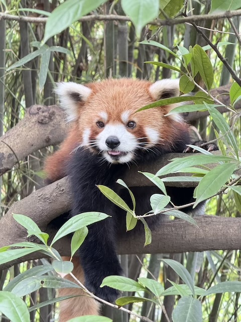
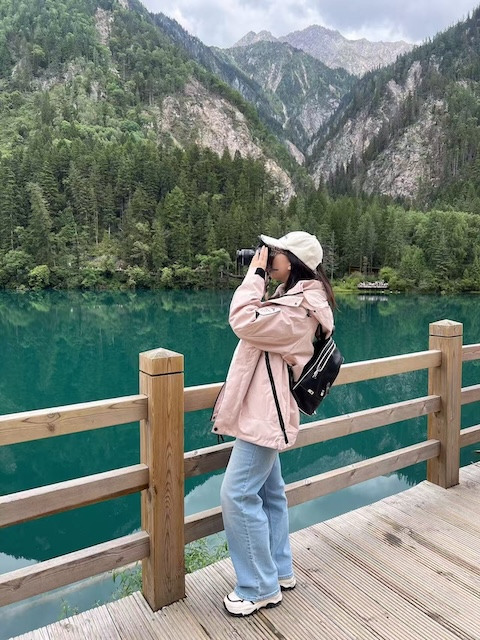
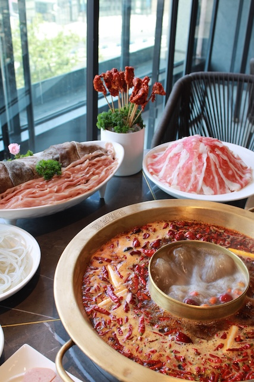

Hello, I'm Jessica!
Here is where you can get to know me a bit more beyond my projects and resume. Here is some fun little tibits about my interests and hobbies. I hope you enjoy learning about me as much as I enjoyed putting this page together.

Life Outside of Work
- I love traveling. We live in a chaotic world and the sights we want to see won't wait for us to be ready.
- I am both a dogs and cats person despite not having any pets of my own.
- I believe Sam's Club has one of the best tiramisu cake out there
- Zootopia is one of the best movies ever made.
- I take pride in the beautiful photos I manage to capture
- It is my goal to own a gaint Snorlax beanbag plushie




Cabo Rojo, Puerto Rico
As you can see, these are pictures I took when I visited Cabo Rojo in Puerto Rico last year in January. Yes, I was one of those people who escaped the cold winter in NYC to go to some tropical island in the Caribbean. It was wonderful and I don't think I can ever go back to NYC beaches again. The hike to get these photos and see the views was totally worth it. And of course, traving to PR, you can't not take a trip to San Juan. We ate pizza and burgers for lunch, like the Americans we are. FYI, the McDonald's there is so much better than the ones here.
Chongqing & Chengdu, China
I have also visited China recently last summer after more than a decade since my last visit. I found it fascinating how prevalent power bank rental stations are in public places. I don't think I have ever seen one of them here in the U.S. before. The market for such services is quite new here in the States. Anyway, my stay in Chongqing and Chengdu was eye opening. I met people from two different minority groups in China, the Miao and Tibetan people, and got to experience their culture and traditions. I climbed the HuangLong mountain, visited the pandas, and ate a lot of spicy food. I miss it already.




